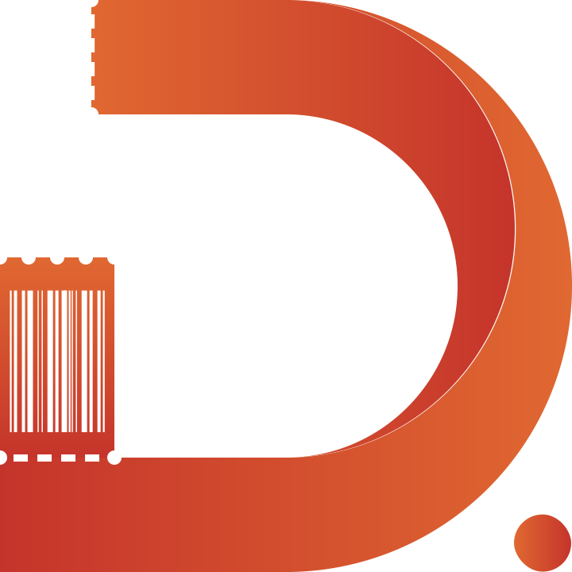

<div class="doRow navbar">
    <div class="doCol-12 navbar-content">
        
        <div class="doCol menu">
            <ul>
                <li><a routerLink="/home-component" routerLinkActive="active">Home</a></li>
                <li><a routerLink="/about-app-component" routerLinkActive="active">AboutApp</a></li>
                <li><a routerLink="/about-us-component" routerLinkActive="active">AboutUs</a></li>
                <li><a routerLink="/contact-component" routerLinkActive="active">Contact</a></li>
                <mat-icon class="hamburger" (click)="isOpen = !isOpen">
                    <div *ngIf="isOpen; else hamburgerIcon">close</div>
                    <ng-template #hamburgerIcon>menu</ng-template>
                </mat-icon>
            </ul>
        </div>
    </div>
</div>
<span *ngIf="isOpen;" class="hamburger-menu">
    <app-hamburger-links></app-hamburger-links>
</span>
